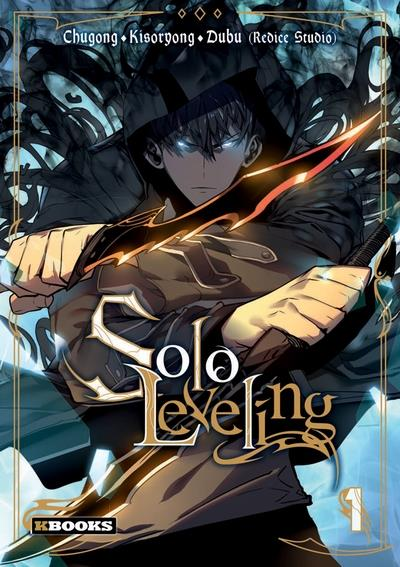

solo leveling
152 chapitre.
Depuis qu'un portail connectant notre monde à un monde peuplé de monstres et de créatures en tout genre est apparu, des personnes "ordinaires" ont acquis la capacité de chasser ces derniers. On les appelle les chasseurs. Vous pensez qu'ils sont tous balaises? Eh bien malheureusement pas tous. Sung Jin-Woo est le plus faible parmi les faibles. Il est donc surnommé par ses confrères chasseurs "le faible". En tout cas il l'était, jusqu'à ce qu'il se retrouve piégé dans un donjon et y acquière une capacité... étrange.